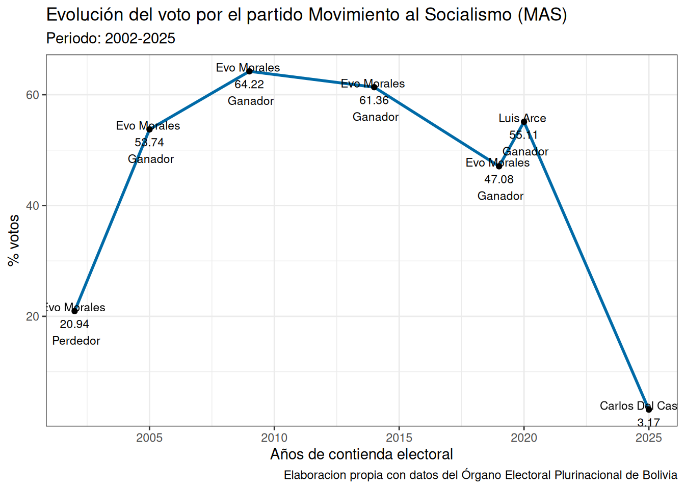
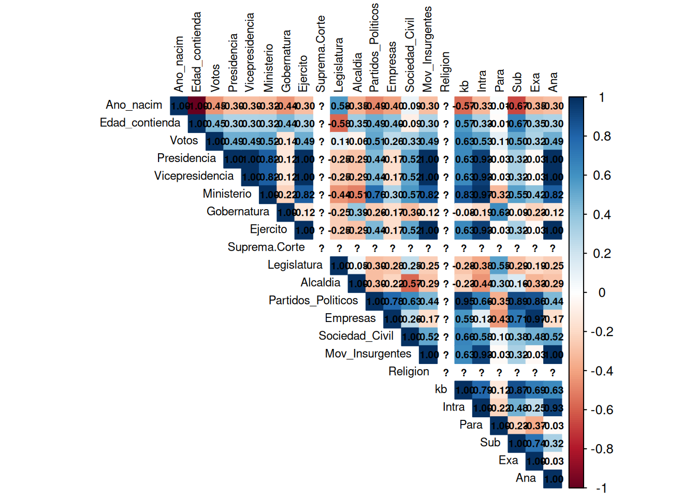
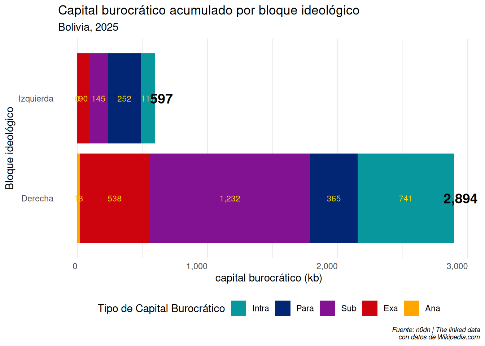
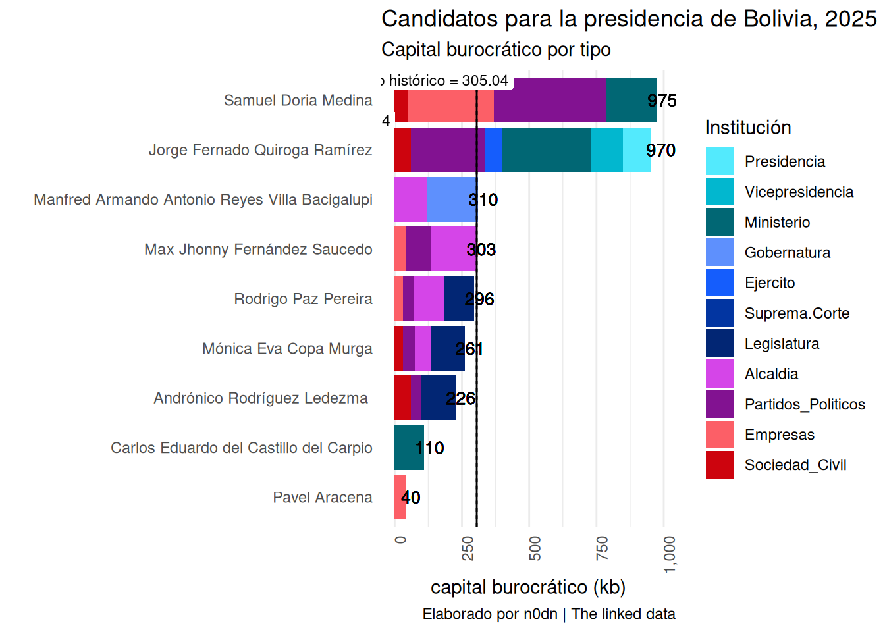

El Capital burocratico de los candidatos a la presidencia de Bolivia 2025
analisis
politica
capital burocrático
Bolivia
Análisis del capital burocrático de los candidatos presidenciales de Bolivia en 2025.
1 Introducción
Dos candidatos, ambos de derecha, avanzaron a la segunda vuelta electoral tras obtener las mayores votaciones el pasado 17 de agosto de 2025. Por un lado, se encuentra Rodrigo Paz Pereira, quien alcanzó el 32.06% de los votos, la mayor proporción entre los ocho aspirantes. Paz Pereira es hijo del expresidente Jaime Paz Zamora (1989-1993) y sobrino nieto del exdictador Víctor Paz Estenssoro (1952-1956, 1960-1964, 1985-1989), quienes gobernaron con mano dura hacia la población y mano extendida hacia los empresarios, siempre alineados con los intereses del gobierno estadounidense bajo el marco del “Plan Cóndor”.
El otro candidato es el expresidente Jorge ‘Tuto’ Quiroga, de la Coalición Alianza Libre obtuvo 26.70% de los votos de acuerdo con el Organo Electoral Plurinacional (OEP). Eduardo Del Castillo, representante del MAS, que ha gobernado el país andino los últimos 20 años, obtuvo 3.17% de los votos, su peor resultado electoral en la historia del partido (gr0-mas?).
La casta hereditaria ha regresado a Bolivia. Tras la primera vuelta, el futuro presidente será alguno de los dos rostros del bloque conservador. La conclusión de los 19 años de hegemonía del MAS marca el fin de un ciclo histórico que transformó al país: crecimiento productivo, mejoras salariales y, sobre todo, avances para las mayorías indígenas quechuas y aimaras, que constituyen alrededor del 80% de la población. Sin embargo, el desgaste es inevitable, y el liderazgo carismático de Evo Morales se fue diluyendo entre conflictos internos, corrupción y una oposición persistente que supo aprovechar el descontento social. Las elecciones de 2025 representan, entonces, el retorno de la tradicional clase latifundista que dominó Bolivia desde mediados del siglo XX.
Este artículo analizará el capital burocrático de los candidatos presidenciales que participaron en la primera vuelta de 2025. Nos interesa observar cómo sus trayectorias políticas se vinculan con las estrategias de los partidos y con los estilos de gobierno que orientan la formulación de políticas públicas.
3 El capital burocrático de los candidatos
Como describimos en artículos anteriores, el capital burocrático es el cúmulo de competencias, experiencia, conocimientos y relaciones que poseen los agentes dentro de una burocracia, y que les permite operar eficaz y legítimamente en el marco institucional estatal o corporativo. A partir de la sistematización de los cargos directivos según su posición en torno al poder ejecutivo es posible medir y comparar la experiencia de cualquier actor, partido o coalición política desde las guerras de Independencia hasta la actualidad. Por su puesto, es un esfuerzo metodológico que aun se encuentra en fase de desarrollo y se requieren aún varias pruebas y detección de errores para mejorar su calibración.
Por ello, inicaremos nuestro análisis presentando los rasgos generalizados de cada actor como se muestra en (tb1-aspirantes-kb-bol?) la mayoría de los candidatos provienen de Cochabamba, Santa Cruz y La Paz, aunque el candidato Paz Pereira nació en Galicia, España, pero se encuentra fuertemente vinculado al departamento de Tarija.
como se aprecia en (tb1-generales-kb-bol?) de los 9 candidatos presentados en las elecciones 6 se identifican con programas e ideologías de derecha y 3 de izquierda. De esos 6 candidatos de derechas 5 cuentan con amplia experiencia en cargos públicos y uno de ellos sólo tiene experiencia en el sector privado, que fue el caso de Pavel Aracena. La edad promedio de los candidatos fue de 54.2 años, en un rango de 70 años máxima por Manfred Reyes y 37 mínima que fueron los candidatos de izquierda de Andrónico Rodríguez, Carlos del Castillo y Eva Copa con 38. Este dato de la edad será relevante cuando examinemos la experiencia por bloques.
| Candidato | Edad | Género | Departamento de nacimiento | Coalición | Partido | Bloque | Activo | Capital burocrático | % de Votos 1°vuelta |
|---|---|---|---|---|---|---|---|---|---|
| Samuel Doria Medina | 67 | Hombre | La Paz | Bloque de Unidad | Unidad Nacional | Derecha | No | 975 | 19.69 |
| Jorge Fernado Quiroga Ramírez | 65 | Hombre | Cochabamba | Libre | Libre | Derecha | Si | 970 | 26.70 |
| Manfred Armando Antonio Reyes Villa Bacigalupi | 70 | Hombre | Cochabamba | APB-Sumate | Alianza Popular de Bolivia | Derecha | No | 310 | 6.75 |
| Max Jhonny Fernández Saucedo | 61 | Hombre | Santa Cruz | FP | Unidad Civica Solidaridad | Derecha | No | 303 | 1.67 |
| Rodrigo Paz Pereira | 58 | Hombre | Galicia | PDC | Partido Demócrata Cristiano | Derecha | Si | 296 | 32.06 |
| Mónica Eva Copa Murga | 38 | Mujer | La Paz | Morena | Morena | Izquierda | No | 261 | 0.00 |
| Andrónico Rodríguez Ledezma | 37 | Hombre | Cochabamba | Alianza Popular | Independiente | Izquierda | No | 226 | 8.51 |
| Carlos Eduardo del Castillo del Carpio | 37 | Hombre | Santa Cruz | MAS-IPSP | Movimiento al Socialismo | Izquierda | No | 110 | 3.17 |
| Pavel Aracena | 55 | Hombre | La Paz | Alianza Livertad y Progreso -ADN | Alianza Democrática Nacionalista (ADN) | Derecha | No | 40 | 1.45 |
Tabla 1. Datos generales de los aspirantes
4 ¿Qué relación tiene el capital burocrático con los votos obtenidos por cada bloque?
Los candidatos de los bloques de derechas como Samuel Doria, Jorge Quiroga, Manfred Reyes, Jhonny Fernández, Rodrigo Paz y Pavel Aracena en conjunto tienen mayor capital burocrático que los candidatos de izquierda Carlos Castillo, Andrónoco Roddríguez y Eva Copa. A su vez, encontramos que si sumamos el porcentaje de votos por bloque, 88.32% fueron votos para los candidatos de derechas y 11.68% para candidatos de izquierdas. En este sentido cabe suponer que existe alguna relación entre los votos con el capital burocrático de los candidatos.
Partimos de una muestra pequeña de 9 casos, y entre los principales hallazgos encontramos que existe una correlación positiva de 0.6283 entre el porcentaje de votos obtenido con el capital burocrático de los candidatos, y entre los tipos de capital burocrático con mayor correlación se encuentran el capital intra-burocrático es decir, con cargos directivos en la presidencia, vicepresidencia y ministerios de Estado con 0.53, el capital sub-burocrático en particular la actividad en partidos políticos con 0.5 grados de correlación y también participaciones en movimientos insurgentes con 0.49 (véase (gf2-cor-votos-bol?)).
En este sentido a mayor a mayor cantidad de votos, mayor capital burocrático. Lo anterior resulta notable toda vez que en análisis anteriores sobre elecciones en Argentina, México, Chile y Venezuela los grados de correlación no son tan significativos, pues rondan entre 0.3 al 0.4. De esta manera nos preguntamos si existe esta diferencia por bloque de partidos que pudiera dar mayor información sobre los resultados electorales.

Votos kb Intra Ministerio
1.00000000 0.62837234 0.52809455 0.51695336
Partidos_Politicos Sub Presidencia Vicepresidencia
0.51195516 0.50217185 0.48752502 0.48752502
Ejercito Mov_Insurgentes Ana Edad_contienda
0.48752502 0.48752502 0.48752502 0.44845316
Sociedad_Civil Exa Empresas Para
0.32519595 0.31731900 0.26244974 0.11098640
Legislatura Alcaldia Gobernatura Ano_nacim
0.10605069 -0.06070493 -0.13638886 -0.44845316
Call:
lm(formula = Votos ~ get(top_var), data = kb_d)
Residuals:
Min 1Q Median 3Q Max
-8.3306 -4.2866 -2.0378 0.9464 22.9625
Coefficients:
Estimate Std. Error t value Pr(>|t|)
(Intercept) 2.61123 5.18332 0.504 0.6299
get(top_var) 0.02191 0.01025 2.137 0.0699 .
---
Signif. codes: 0 '***' 0.001 '**' 0.01 '*' 0.05 '.' 0.1 ' ' 1
Residual standard error: 9.972 on 7 degrees of freedom
Multiple R-squared: 0.3949, Adjusted R-squared: 0.3084
F-statistic: 4.567 on 1 and 7 DF, p-value: 0.06993Nuestros hallazgos muestran que al sumar el capital burocrático por bloque de partidos, los candidatos de la derecha acumulan mayor experiencia en cargos de dirección dentro del Estado con respecto a los candidatos de izquierda, una diferencia de 2,297 puntos de kb acumulados. La mayor diferencia se encuentra en el capital sub-burocrático que corresponde a la experiencia en particos políticos que es de 1087 kbs, es decir, los candidatos de derecha cuentan con 10 veces mayor experiencia en partidos que los candidatos de izquierda. Además la diferencia en capital intra-burocrático es de 631 kb y en capital exa-burocrático la diferencia es de 448 kb. La menor diferencia entre bloque se encontró en el capital sub-burocrático con 113 kb y 18 en exa-burocrático como se aprecia en (gf3-votos-bloque-bol?).
Lo anterior lleva a cuestionarnos si la selección de candidatos con tan bajo capital burocrático por parte de los partidos de izquierda fue un evento intencionado, un mal cálculo electoral o el resultado de la lucha política entre sus líderes. Si bien Evo Morales mostraba un desgaste electoral y político para el MAS, lo cierto es que sin su apoyo y capital político las elecciones no se ganan. Luis Arce no sólo condujo mal la economía del país, aunado al boicót de Evo tras ser proscrito por Arce para participar en la contienda de 2025. El resultado de su lucha política personal, conllevó al desastre electoral y el producto de ello fue la presentación de candidatos con poca experiencia en la conducción del Estado. Se presentaron como partido opositor minoritario pero fragmentado.

Generalmente, los partidos oficialistas proponen candidatos con capital burocrático superior a la media histórica, sin embargo, el MAS y los partidos surgidos de él, impulsaron candidatos con muy bajo capital burocrático. En cambio, la derecha aprovechó esa inexperiencia para impulsar a viejos lobos de mar, representantes de las oligarquías tradicionales para ganar la contienda ante un escenario de desgaste y fractura del MAS.
NotaNota
La trayectoria política es el resultado de la intención, persistencia y capacidad de adaptación de las personas para lograr un objetivo propuesto desde temprana edad.
Recordemos que el capital burocrático es un indicador de ese esfuerzo y capacidad en actividades directivas que le dotan del prestigio necesario para acceder a posiciones cada vez más estratégicas dentro del aparato de Estado que les permitan alcanzar los recursos necesarios para llevar a cabo los programas políticos y solventar temas de interés de su subred política.
###¿Qué tan diferentes son los candidatos que se presentaron en 2025 con respecto al resto de candidatos que se han presentado en la historia de las elecciones en Bolivia?
A partir de un estudio previo sobre el capital burocrático de 210 candidatos a la presidencia de Bolivia durante el periodo de 1825 a 2020, se encontró que la media histórica es de 305.04 kb. Si calculamos la desviación estándar de cada actor presentado en 2025 con respecto a la media histórica, encontramos tres categorías que se detallarán a continuación:
4.0.0.1 Muy alto
Son aquellos candidatos con una desviación stándar mayor a 100 puntos base y que sólo considera a dos actores, Samuel Doria Medina y Jorge Quiroga con una desviación estándar -669.96 y -664.96 con respecto a la media histórica. Estos dos son los candidatos con mayor experiencia en cargos directivos, siendo Quiroga el único de los nueve candidatos con experiencia previa en la Presidencia y Vicepresidencia así como la mayor acumulación de kb en cargos ministeriales. En cambio Samuel Doria posee mayor experiencia en dirección de partidos políticos, empresas y en ministerios de estado respectivamente como se puede apreciar en (gr2-Dist-cargos?).

4.0.0.2 Medio
El segundo grupo son aquellos cercanos a la media histórica, se encuentran Mandred Reyes, Johonny Fernández, Rodrigo Paz, Eva Copa y Andrónico Rodríguez quienes registraron una desviación estándar de -496, 204, 904, 44.04 y 79.04 respectivamente. Estos candidatos son los que mayor semejanza tienen con un candidato promedio en las elecciones presidenciales. La característica más notable de estos candidatos es la acumulación de cargos dentro de las alcaldías y en las legislaturas. Sólo en el caso de Manfed Reyes tiene experiencia en la gubernatura departamental. En menor medida, cuentan con experiencia en partidos políticos, sociedad civil y empresas. Ninguno cuenta con experiencia en el capital intra-burocrático, es decir, no cuentan con cargos en el poder ejecutivo plurinacional.
4.0.1 Bajo
En cambio, aquellos que registran un capital burocrático por debajo del promedio se encuentran Carlos Eduardo del Castillo y Pavel Aracena con una desviación estándar de 195.04 y 265.04 respectivamente. Este grupo se caracteriza por acumular un solo tipo de capital burocrático, ya sea como ministro de Estado en el caso de Castillo y como empresario en el caso de Aracena, pues como vimos anteriormente, los candidatos tienden a acumular diferentes tipos de capital burocrático en sus trayectorias polítcas antes de postularse a un cargo presidencial. Como señalamos al inicio del análisis, el MAS impulsó la candidatura de un actor con tan poca experiencia en la administración pública que se asemeja más a un actor sin experiencia alguna que a un político promedio.
5 Conclusion: El resgreso de la rancia oligarquía y la fragmentación de la izquierda
La primera vuelta electoral en Bolivia muestra el desgaste del MAS como maquinaria electoral ganadora y la revitalización de la oligarquía tradicional. El expresidente Quiroga, bien conocido por sus políticas de privatización y sometimiento a los intereses norteamericanos regresó no por las propuestas innovadoras para mejorar la calidad de vida de la mayoría de los bolivianos, que más del 80% descienden de los pueblos originarios, sino para frenar la inflación que beneficie a los exportadores. En caso de ganar Quiroga, seguramente privatizará las industrias bolivianas que han sido el puntal del desarrollo económico que por décadas estuvo suprimido por las oligarquías y terratenientes mineros, y que bajo el modelo neoliberal sólo aumentó la desigualdad y la represión.
La experiencia muestra que Quiroga sólo ofrece un programa anquilosado de promesas revasadas por la historia reciente del país andino. Será el retorno a un país atrasado y desigual donde los terrateniente buscarán recuperar los privilegios que creen haber sido arrebatados por los millones de bolivianos que salieron de la pobreza en los últimos veinte años.
Por su parte, con Paz Pereira, un candidato tibio - o como dicen ahora, de Centro-Centro - ligado familarmente por dos expresidentes del MIR, su padre y su abuelo. Ambos prvenientes de un partido ideológicamente de izquierda pero en la práctica aplicaron políticas neoliberales favorables a la privatización de empresas públicas y posicionamiento del mercado sobre las necesidades sociales. Paz Pereira no ha distado mucho del programa neoliberal como alcalde de Tarija, incluso en sus promesas de campaña propone que el gobierno central controle la mitad de los recursos públicos y la otra los privados.
A nivel regional, el regreso de la oligarquía boliviana servirá para fortalecer el bloque de gobiernos de extrema derecha liderada por el presidente argentino Javier Milei, quienes han impulsado políticas favorables al colonialismo norteamericano en sudamérica capaces de garantizar la extracción de materias primas necesarias para la industria estadounidense, hoy en crisis por el avance chino. Habrá que esperar que en el mediano plazo Bolivia vuelva a poner en venta el gas, litio y demás riquezas mineras posee el país y que favorecerá a los mismos que causaron, por sus fallas, el ascenso del MAS.
Por lo tanto, esta grave derrota deberá servir a la izquierda boliviana como un gran aprendizaje primero programático, particularmente sobre las revoluciones constantes y la atención por nuevos derechos y mejoras en lugar de quedarse estancados cuando se llega a un punto. Segundo, los conflictos personales de sus dirigencias no deben escalar al punto de inmolar al movimiento en su conjunto. Tercero, la formación de cuadros jóvenes con capacidades técnicas y sociales aun está en marcha pero sigue cruda.